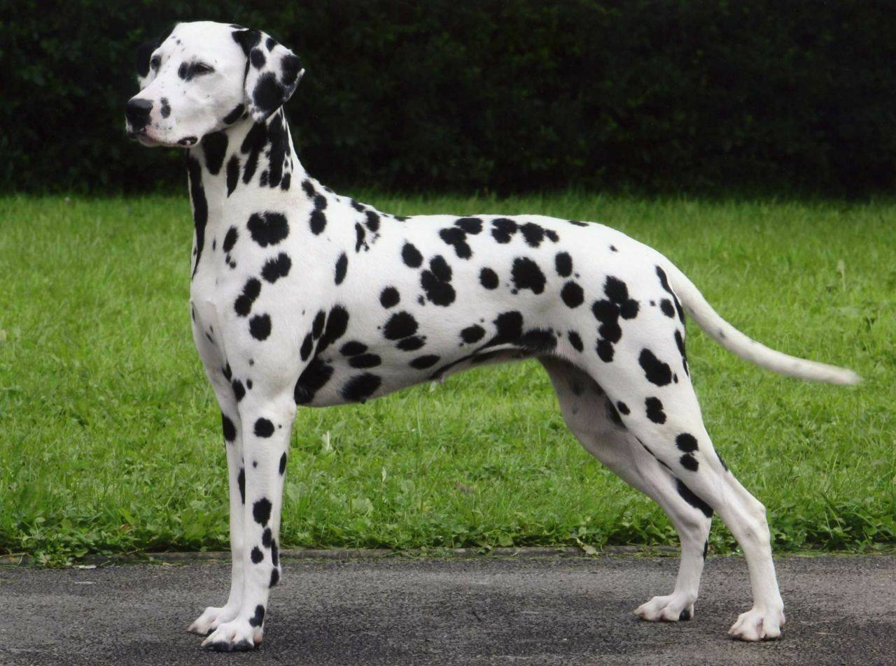

Далматин

Происхождение: Хорватия
Размер: Крупные (рост: 54–62 см, вес: 24–32 кг)
Характер: Энергичные, умные, могут быть упрямыми
Особенности: Известны пятнистым окрасом (щенки рождаются белыми). Требуют много физических нагрузок. Хорошо ладят с детьми, но нуждаются в дрессировке
Здоровье: Склонны к глухоте, мочекаменной болезни